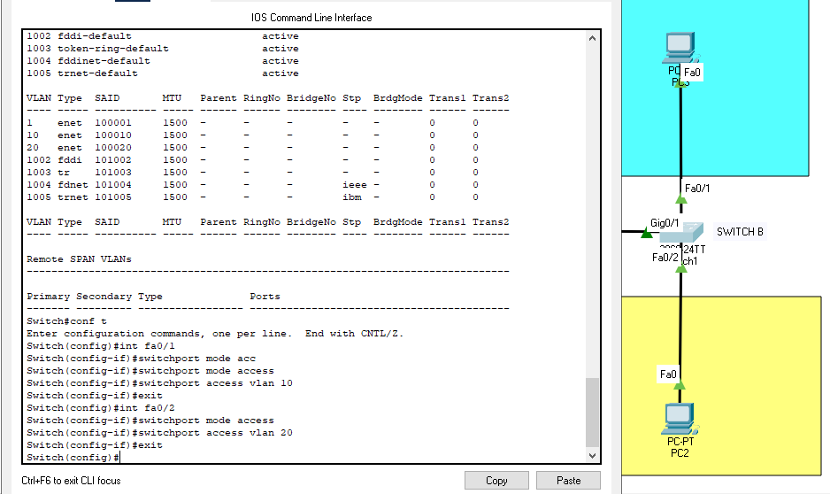

Packet Tracer Netwerk

Packet Tracer Simulaties
Met Cisco Packet Tracer bouwde ik volledige netwerken in een virtuele omgeving. Hierdoor kon ik veilig experimenteren en leren zonder risico voor echte apparatuur.
Simulatie mogelijkheden:
- Virtuele routers en switches
- Real-time packet flow visualisatie
- Device configuratie via CLI
- Network testing en troubleshooting

Netwerk Topologieën
Verschillende netwerk topologieën ontwerpen en implementeren. Van simpele LAN's tot complexe multi-site WAN netwerken.
Topologie types:
- Star topology voor kleine kantoren
- Hierarchical design met core/distribution/access
- Redundante verbindingen voor high availability
- WAN connections tussen sites

Device Configuration & Testing
Apparaten configureren via CLI en connectiviteit testen. Troubleshooting skills ontwikkelen door problemen op te lossen in de simulatie.
Praktische ervaring:
- VLAN en inter-VLAN routing setup
- OSPF en EIGRP routing protocols voor automatische routering
- DHCP en DNS services instellen
- Troubleshooting met ping en traceroute